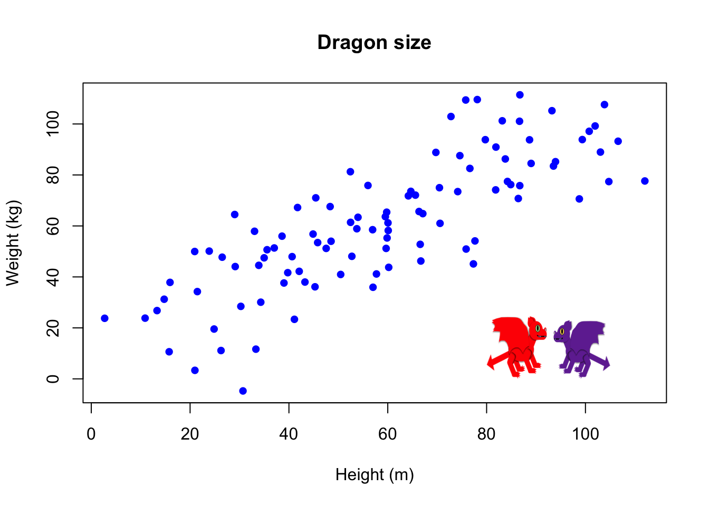

In this section, we will look at how we can use simple linear regression to analyse data with a continuous numeric response and a numeric explanatory variable. Linear regression is a type of linear model, you might want to visit the general page on linear models before reading the rest of this information click here.
Linear regression has two motivations. The first is called inference. This is when you want to say something about a population from a sample. The second is prediction, where we use models to predict values of the response for specified values of the explanatory variable. These predictions can either be for observed values of the explanatory (mainly for plotting), for unobserved values of the explanatory variable within the same range as observations, or for novel values of the explanatory variable outside the range of observations (this is more risky! - more on this later).
Example inference: do zombies run faster than humans?
Example prediction: how much faster will I be if I turn into a zombie?
Figure 1: Human and Zombie © Emily G. Simmonds cc-by
In simple terms, we fit a straight line to:
estimate a relationship between \(X\) and \(Y\)
predict change in \(Y\) from change in \(X\).
Linear regression assumes a causal relationship between \(X\) and \(Y\), i.e. it assumes that \(X\) does something to \(Y\). However, we can never actually test this with this method, we can only quantify the patterns. To test if \(X\) really does have a causal affect on \(Y\), you would need experiments. Otherwise, you never know if the relationship is a coincidence e.g. https://www.tylervigen.com/spurious-correlations
Example questions you can answer with linear regression:
As stated earlier on this page, you choose to use a linear regression when you have continuous numeric a response variable and continuous numeric explanatory variables. A simple linear regression has only one explanatory variable, a multiple linear regression has more than one. There is no upper limit in theory, but if you add too many, your model will less complex than reality.
Examples of continuous numeric variables:
If you are ever unsure if your variables are continuous numeric or not, ask yourself: could all values between those measured exist?
In the example below, height in metres could take any value between 0 and 100. This means we could predict the weight (\(Y\)) in kg for a dragon that is 1.22m tall, 20.33333m tall, or any other value.

There are several ways to check the type of data that your variables are in R.
To look at this, we will begin with some data. The data are still on dragons, but now we have an extra variable, colour (purple or red).
We can look at the first six lines of the data using the function head().
head(DragonData)This is nice, we can see what the columns are called and what the data looks like. From this, we can use our knowledge of theory to work out if the variables are numeric or categorical. But, we would not know how R sees the data. To do this, we want to use the function str(). This stands for ‘structure’ and it will tell you the structure of each column in the dataframe.
str(DragonData)## 'data.frame': 100 obs. of 3 variables:
## $ Weight: num 23.77 23.82 10.64 11.12 -4.73 ...
## $ Height: num 2.71 10.9 15.76 26.26 30.7 ...
## $ Colour: Factor w/ 2 levels "purple","red": 1 2 1 2 2 2 2 2 2 1 ...Now, we can see that Weight and Height are something called ‘num’ this = numeric. Colour on the other hand is a factor. Factor is another word for a categorical variable.
Using str() we can check how R is treating our variables. This should not replace the theory because sometimes R gets it wrong. In this case, you can change the way that variables are stored using functions like as.numeric() and as.factor() e.g.
as.numeric(DragonData$Colour)## [1] 1 2 1 2 2 2 2 2 2 1 1 1 1 2 2 1 1 1 1 2 2 2 1 1 1 2 2 1 2 1 1 2 1 1 2 2 2 1 1 2 1
## [42] 2 1 1 1 1 2 1 1 2 1 2 1 1 1 2 2 2 1 2 2 1 2 2 1 1 1 1 1 2 1 1 2 2 1 2 2 2 1 1 1 2
## [83] 2 2 2 2 2 2 2 2 1 1 2 1 1 2 1 2 1 2When we create a model we want to represent mathematically how the data were generated.
When we use a regression model (this is also true for linear models) make an assumption that there is a linear relationship between our two variables. Mathematically, we say that we can capture the data generation process with a straight line and some error.
The line is defined by two parameters: \(\alpha\) = the intercept, where the line crosses the y-axis and \(\beta\) the slope of the line (steepness/gradient), it is how much \(Y\) changes for every increase in 1 unit of \(X\). We can alter the position of the line using these two parameters. The final part of the model is \(\epsilon\), which is the error around the line, we estimate this using a parameter \(\sigma^{2}\) that is the variance of the error.
We can write these model components as and equation in terms of \(Y\):
\[ Y_i = \color{orange}\alpha + \color{blue}\beta X_i + \color{red}\epsilon_i \]
This worked example demonstrates how to fit a linear regression model in R using the lm() function.
lm() stands for linear model (should seem familiar). It takes the argument of a formula in form: y~x. The function will fit the regression model using maximum likelihood estimation and give us the maximum likelihood estimates of \(\alpha\) and \(\beta\) as an output. It does also estimate \(\sigma^{2}\) of the error, but it does not report this.
We will do this using the dragon data from earlier on the page. We will use Weight as our response (\(Y\)) and Height as our explanatory variable (\(X\)).
model1 <- lm(DragonData$Weight ~ DragonData$Height)Great. We have run a model. This first time we chose the appropriate columns using the $ symbol after the dataframe name. But there is another way to write the code for lm() and this second way is important to use for predicting later.
The second way uses an extra argument call data
model2 <- lm(Weight ~ Height, data = DragonData)If we look at the results of these models using the function coef(), we can see they are the same.
coef(model1)## (Intercept) DragonData$Height
## 14.2385703 0.7961855coef(model2)## (Intercept) Height
## 14.2385703 0.7961855Here it would give more examples on what the parameters mean.
Residuals introduced here.
This would show where to find the parameters e.g. more on coef and summary etc and resid.
This would focus on theory of uncertainty in parameter estimates and prediction.
Explain how to calculate and why.
Focus on doing this in R, e.g. confint() or summary() then 2*SE
Explain why you need to check assumptions, what things to check for and what problems they could have.
Also how to fix them.
How to create diagnostic plots in R and some interpretation and fixing examples e.g. log() and sqrt().
What each parameter can mean for a result and how to word statistical conclusions.
How to read outputs from R and plot results.
Links to general linear models page, ANOVA, Categorical, Multiple regression etc.